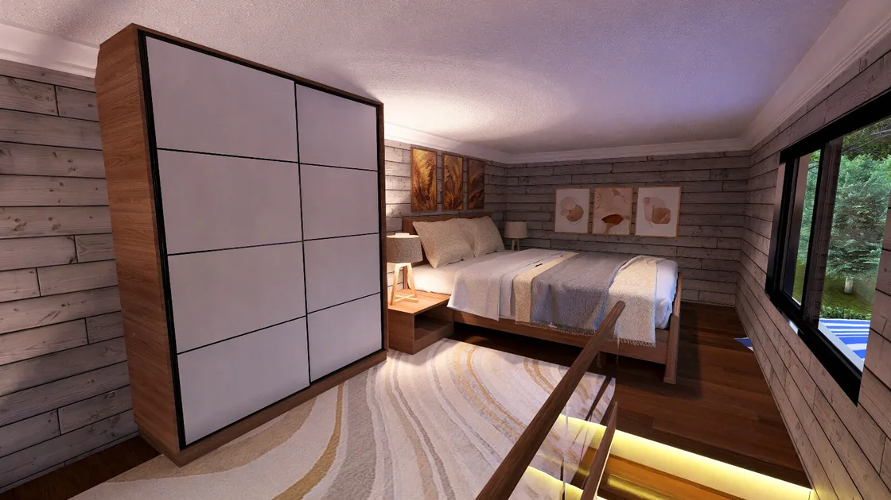

Tiny House in Dietikon / Oberdorf kaufen
Direkt aus eigener Produktion, individuell konfigurierbar und für Lieferung, Grundstück und lokale Anforderungen strukturiert vorgeprüft.
MODUNERA plant Tiny-House-Projekte für Dietikon / Oberdorf mit acht Ausgangsmodellen, maßgefertigtem Innenausbau und projektbezogener Transportprüfung. Eine lokale Genehmigung oder konkrete Lieferbarkeit wird erst nach Grundstücks- und Dokumentenprüfung bestätigt.
Für Dietikon / Oberdorf geplant, in eigener Fertigung gebaut.
Für das Grundstück sind Höhenlage, Schneelast, Frost, sommerlicher Wärmeschutz und die letzte Zufahrt getrennt zu prüfen.
Tiny House zuerst
Acht Modelle bilden den Kern. Länge, Grundriss, Fassade und Technik werden nach Nutzung gewählt.
Möbel nach Maß
Küche, Stauraum, Treppe und Einbauten entstehen passend zu Bewegungsflächen und Gewicht.
Dokumentencheck
Technische Unterlagen werden mit den Anforderungen des Zielprojekts abgeglichen.
Transportplanung
Route, Abmessungen, Gewicht, Zufahrt und Entladung werden als ein Prozess betrachtet.

Mobil heißt nicht automatisch genehmigungsfrei.
Gebäude und Anlagen dürfen in der Schweiz grundsätzlich nur mit behördlicher Bewilligung errichtet oder verändert werden. Auch provisorische Vorhaben können bewilligungspflichtig sein; Ausnahmen und Verfahren richten sich nach Kanton und Gemeinde.
Amtliche Ausgangsquelle ↗Stand: 2026-08-13. Allgemeine Orientierung, keine Rechts- oder Behördenberatung.
Drei mögliche Wege nach Dietikon / Oberdorf.
Die Transportform wird erst nach technischen Daten und Route festgelegt.
Eigene Achse
Nur bei passender Zulassung, Versicherung, Abmessung, Gewicht und Fahrerlaubnis.
Tieflader
Für nicht straßenzugelassene oder abmessungsbedingt besondere Einheiten.
Ro-Ro / Ferry
Als Teil einer kombinierten Route; Hafen, Fahrplan und Nachlauf werden projektbezogen kalkuliert.
Entladung
Letzte Zufahrt, Rangierfläche, Kranbedarf, Untergrund und Anschlüsse prüfen.
Fragen vor dem Angebot.
Konkrete Antworten entstehen aus Standort, Nutzung und technischer Konfiguration.
Eine Lieferung nach Dietikon / Oberdorf wird nach Modell, Abmessungen, Gewicht, Route, letzter Zufahrt und Entladepunkt geprüft. Erst die Transportfreigabe macht Termin und Kosten belastbar.
Räder oder ein Fahrgestell bedeuten nicht automatisch Genehmigungsfreiheit. Nutzung, Dauer, Grundstück und die Regeln der zuständigen Stelle in Schweiz müssen vor Bestellung geprüft werden.
Je nach Modell kommen zugelassene Überführung auf eigener Achse, Tieflader beziehungsweise Sondertransport oder eine kombinierte Route mit Fähr- beziehungsweise Ro-Ro-Abschnitt in Betracht.
Die Ausstattung kann für vier Jahreszeiten geplant werden. Die konkrete Auslegung von Dämmung, Verglasung, Lüftung, Heizung und Frostschutz richtet sich nach Grundstück und Nutzung in Dietikon / Oberdorf.
Ja. Küchen, Treppen, Stauraum, Einbauten und lose Möbel können im Rahmen von Gewicht, Technik und Grundriss maßgefertigt werden.
Senden Sie Zielland, Ort, gewünschte Nutzung, Personenzahl und ein Budgetfenster per WhatsApp. Danach werden Modell, Standort, Dokumente und Transport strukturiert vorgeprüft.